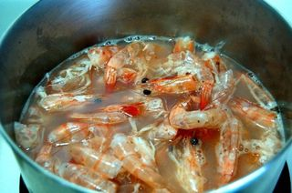
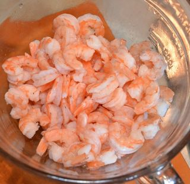
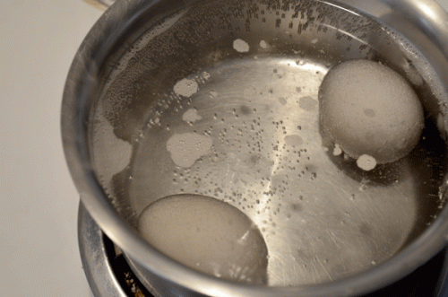
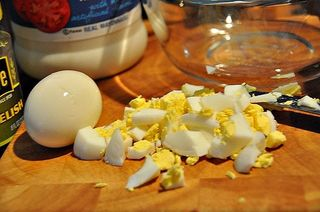
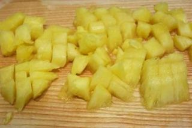
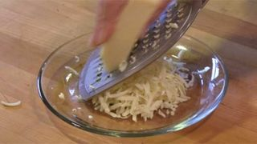
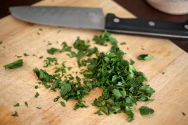
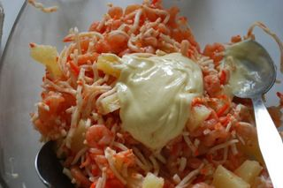

Шаг 1: подготавливаем креветки.

Первым делом включаем температуру плиты на высокий уровень, ставим среднюю кастрюлю на конфорку, наливаем воду, солим и доводим ее до кипения. А пока жидкость закипает, подготавливаем креветки. В не зависимости от того, замороженные они или нет, их нужно промыть. Итак, выкладываем креветки в дуршлаг, промываем под проточной теплой водой и скидываем в кипящую воду. После того, как вода повторно закипит, накрываем кастрюлю крышкой и варим маленькие креветки 6 - 7 минут, большие около 10 минут.

Готовые креветки сливаем в дуршлаг и оставляем остывать на несколько минут. Затем очищаем от панциря, головы, ножек и хвоста. Очищенное мясо выкладываем в тарелку, при необходимости его можно нарезать на 2 - 3 части.
Шаг 2: подготавливаем яйца.

Далее в маленькую кастрюлю выкладываем яйца, заливаем водой и ставим на конфорку. Включаем температуру плиты на высокий уровень, доводим до кипения, сбавляем температуру и варим яйца 7 - 10 минут. После аккуратно сливаем воду и наливаем холодную.

Когда яйца остынут, чистим их от скорлупы, выкладываем на разделочную доску и нарезаем кубиком, соломкой или на кусочки произвольной формы. Измельченные яйца выкладываем в отдельную тарелку.
Шаг 3: нарезаем ананасы.

С консервированных ананасов сливаем сок и на разделочной доске нарезаем фруктовые кольца кубиками. Измельченные ананасы перекладываем в тарелку.
Шаг 4: подготавливаем сыр.

Сыр для данного рецепта можно использовать ваш любимый, но желательно твердых сортов. Итак, натираем его на крупной терке или нарезаем кубиком размером до 1 сантиметра. Подготовленный сыр выкладываем в отдельную тарелку.
Шаг 5: нарезаем петрушку.

Петрушку промываем под проточной водой, встряхиваем от жидкости и укладываем на разделочную доску. С помощью острого ножа шинкуем зелень и выкладываем ее в глубокую миску или салатницу.
Шаг 6: заправляем салат.

К петрушке добавляем креветки, яйца, сыр, ананасы, соль по вкусу и столовой ложкой тщательно все перемешиваем. Затем заправляем салат майонезом, лимонным соком и можно подавать наше блюдо.